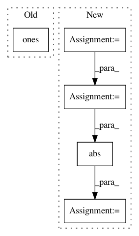

2a11d3f0bad2430b81628fa6cb0a6301d099d77d,performer/fast_attention/tensorflow/fast_attention_test.py,TransformerLayersTest,test_softmax_noncausal_attention_block_output,#TransformerLayersTest#,53
Before Change
num_heads = 1
dim = 4
num_random_features = 350
query = tf.ones([batch_size, length, num_heads, dim])
key = tf.ones([batch_size, length, num_heads, dim])
value = tf.ones([batch_size, length, num_heads, dim])
kernel_transformation = fast_attention.softmax_kernel_transformation
projection_matrix = fast_attention.create_projection_matrix(
After Change
query = tf.multiply(query, 1.0 / math.sqrt(float(dim)))
attention_scores = tf.einsum("BXHD,BYHD->BXYH", query, key)
attention_scores = tf.nn.softmax(attention_scores, axis=2)
exact_attention_block_output = tf.einsum("BXYH,BYHD->BXHD",
attention_scores, value)
max_error = 2.0
error = tf.math.abs(
(exact_attention_block_output - attention_block_output) /
exact_attention_block_output)
self.assertLess(tf.math.reduce_max(tf.math.abs(error)), max_error)
def test_fast_attention(self):
hidden_size = 64
In pattern: SUPERPATTERN
Frequency: 3
Non-data size: 5
Instances
Project Name: google-research/google-research
Commit Name: 2a11d3f0bad2430b81628fa6cb0a6301d099d77d
Time: 2020-12-11
Author: xingyousong@google.com
File Name: performer/fast_attention/tensorflow/fast_attention_test.py
Class Name: TransformerLayersTest
Method Name: test_softmax_noncausal_attention_block_output
Project Name: facebookresearch/Horizon
Commit Name: 034e4147111e5ce09d92cc1f231f58c35568811a
Time: 2018-07-13
Author: yitaoliang@fb.com
File Name: ml/rl/test/gym/gym_evaluator.py
Class Name: GymEvaluator
Method Name: evaluate
Project Name: kengz/SLM-Lab
Commit Name: 319882b5679229124774e91d5c5762853d75f3ce
Time: 2018-01-06
Author: lgraesser@users.noreply.github.com
File Name: test/agent/net/test_nn.py
Class Name: TestNet
Method Name: test_output